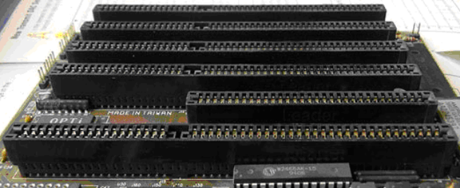

Sběrnice od firmy IBM pro první počítače IMB PC, IBM PC/XT. Jedná se o úplně první sběrnici, která byla kdy navržena a vyrobena. Sběrnice spolupracovala s procesorem 8088, který byl 16 bitový. Běžně se na základní desce nacházelo 5 – 8 slotů pro přídavné karty. Samotná sběrnice měla 8 bitů pro přenos dat, 20 bitů pro přenos adresy, 6 pro přerušení IRQ a 3 pro DMA. Mohla pracovat na frekvenci 8 MHz, což byla její maximální frekvence, ale pro procesor 8088 to plně dostačovalo. Jedná se o paralelně fungující sběrnici.

ISA (nebo také AT bus) je přímý nástupce předchozí sběrnice PC bus, vytvořena firmou IBM v roce 1981. ISA je s PC bus zpětně kompatibilní, ale liší se několika parametry. Je určena pro procesor 80286, má 16 bitů vyhrazených pro přenos dat a 24 bitů pro přenos adresy. ISA mohla běžet na více frekvencích. Konkrétně se jednalo o 4,77MHz pro 8 bitovou sběrnici a 6 MHz nebo 8 MHz pro sběrnici 16 bitovou. Samotný slot ISA je 16-bitový, složen ze dvou částí s rozdílnou délkou. Mezi její nevýhody patří vyšší paměťová náročnost a velké zatížení systému při komunikaci karet.
Sběrnice vyvinuta opět firmou IBM a to v roce 1987, tentokrát pro jejich řadu počítačů IBM/PS2. Důvod vzniku téhle sběrnice byl nedostačující rychlost dřívějšího standardu ISA a tím pádem pokus o nový standard sběrnice. Jako pokus to také zůstalo, díky tvrdým podmínkám licencování a chybějící zpětnou kompatibilitou s ISA. Tahle sběrnice byla 32 bitů a umožňovala přenášet data jak po 16 bitech, tak i po 32 bitech. Přenos adresy mohl být dvojí – 24 bitů, nebo 32 bitů. Pracovní frekvence byla 10 MHz. Slot MCA má 2x68 kontaktů a může být prodloužen o tzv. video rozšíření s 2x10 kontakty.

Sběrnice EISA je nástupce sběrnice ISA. Tentokrát se nejedná o práci IBM, ale jde s práci spolupráce více firem, leč byla používána v IBM PC/AT. Cíl vzniku téhle sběrnice bylo vytvořit sběrnici podobnou MCA, ale zpětně kompatibilní s ISA a tak v roce 1988 vzniká EISA. Stejně jako u MCA se jedná o 32 bitovou sběrnici – 32 bitů pro přenos dat, přenos adresy byl též 32 bitový. Frekvence, na které mohla EISA pracovat byla 8 MHz, kvůli zpětné kompatibilitě s ISA. Byla řízena programově, tudíž zde chyběly propojky. Byla hojně využívána s procesory 80386 a 80486, ale nikdy se masově nerozšířila kvůli ceně a mechanickému provedení.

Sběrnice PCI byla vyvinuta společností Intel v roce 1993 pro počítače s procesory Intel Pentium. Jedná se o paralelní sběrnici, která jako první nabízí 64 bitovou šířku přenosu dat a díky tomu může plně využívat procesor Pentium, ale také umožňuje 32 bitový přenos. Maximální frekvence, na které byla schopna pracovat je 33 MHz. U PCI již nenajdeme zpětnou kompatibilitu s jejími předchůdci, přesto byla hojně rozšířena. Pro dodržení zpětné kompatibility jsou základní desky stále osazovány ISA sloty. S příchodem PCI také příchází několik technologických novinek jako například Plug and Play, který byl vyvinut v roce 1992 a umožňoval pouze zapojit přídavnou kartu a o konfiguraci se postaral sám počítač. Další novinkou byla možnost využití sběrnice v jiných zařízeních (např. MAC) díky mezisběrnicovému můstku.

AGP není sběrnice v pravém slova smyslu, protože do něj lze zapojit pouze jedno zařízení. Grafická karta. Vzniká v dílnách firmy Intel v roce 1997 z důvodu nedostatečné propustnosti sběrnice PCI a zvyšující se náročnosti grafických rozhraní programů. Vznikla upravením PCI, tudíž jsou si v několika ohledech podobné. Základní frekvence byla 66 MHz, ovšem další verze přinášely vyšší frekvenci a s tím i větší datovou prostupnost – například AGP 2x používá 66 MHz double pumped na 133 MHz.

PCI Express je v současné době standard, který byl vytvořen jako náhrada PCI, PCI-X a AGP a byl představen v roce 2004 jako výsledek spolupráce více firem. Tahle sběrnice je založena na sériové komunikaci, na rozdíl od starších typů sběrnic a to především z důvodu možnosti navyšování frekvence, na které PCI Express bude pracovat. Podobně jako v případě AGP nám PCI Express prošel letitým vývojem, který nám přináší změny v propustnosti. Pro porovnání, PCI Express v1.0 měl rychlosti pro x1 250MB/s a pro x16 4GB/s. Současný PCI Express 4.0 má pro x1 propustnost 3.94GB/s a pro x16 31.5GB/s.